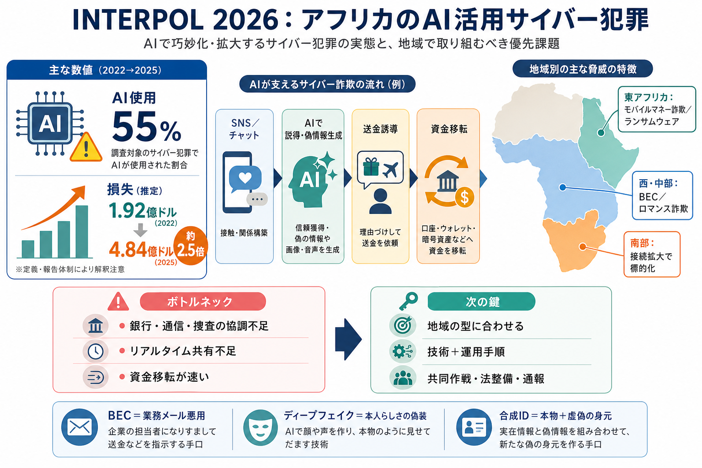

INTERPOL (@INTERPOL_HQ) / Posts / X
INTERPOL @INTERPOL\_HQ 2h 🚨 INTERPOL report finds AI linked to more than half of cybercrime in Africa Cyberatta…

INTERPOL 2026
アフリカで報告されるサイバー犯罪のうち、AI活用がどれほど浸透し、被害がどう増えているのかを要点整理します。
越境する犯罪
サイバー犯罪は国境を越えて起きます。AIは自動化・説得力向上・偽情報生成に使われやすく、モバイルマネーやSNSが攻撃面を広げます。
脅威が“標準装備”へ
AIは“特別な攻撃”ではなく、犯罪のやり方を量と速度で底上げする道具として広がっています。結果として、検知も阻止も間に合いにくくなります。
数字が語る
INTERPOLによると、アフリカで報告されたサイバー犯罪のうちAIが使われているのは55%。さらに金銭損失は2024年の1.92億ドルから2025年に4.84億ドルへ増加しました。
何が増えたか
増加の背景として、AIを用いた不正誘導、盗まれたログイン情報、高度化したソーシャルエンジニアリングが挙げられています。
オンライン詐欺が中心
アフリカではオンライン詐欺が主戦場で、AI・SNS・モバイルマネーを組み合わせて、被害者を送金へ導く傾向が強いと整理されています。
一律ではない
脅威は地域で異なり、東アフリカはモバイルマネー詐欺やランサムウェア、西・中部アフリカはBECやロマンス詐欺、南部アフリカはデジタル接続の進展が標的化を後押ししています。
“種類”で対策が変わる
手口は複数です。BECは業務メールの信頼を悪用、ディープフェイクは本人らしさを偽装、合成IDは虚偽情報を組み合わせた“新しい身元”で突破を狙います。
対策のボトルネック
銀行・通信事業者・捜査機関の協調の弱さと、リアルタイム情報共有の不足が“弱点”として示されています。資金移転が速いほど、技術だけでは追いつきにくくなります。
成果も出ている
AI駆動型の脅威への備えが不十分な国もある一方で、法制度整備、子ども関連オンライン犯罪への報告プラットフォーム、国際共同作戦による逮捕・押収・資金回収の成果が紹介されています。
数字には前提がある
55%のAI使用や地域差について、定義（何をAI使用と判定するか）やサンプル／報告体制の偏りが不明なため、実態は高い／低い可能性があります。政策判断には追加データが安全です。
まとめ
AI活用は55%で、損失額は約2.5倍に増加。だからこそ、技術だけでなく銀行・通信・捜査の連携とリアルタイム共有を強化し、地域ごとの“型”に合わせた対策が必要です。
INTERPOL @INTERPOL\_HQ 2h 🚨 INTERPOL report finds AI linked to more than half of cybercrime in Africa Cyberatta…
Interpol provides investigative support, expertise and training to law enforcement worldwide, focusing on three major ar…
We maintain criminal databases of fingerprints, DNA profiles and facial images. Such forensic data is crucial in interna…
Video by Interpol on August 04, 2026. May be an image of lighter, matchbook, cigarette and text. Photo by Interpol on A…
Publication Type: Periodical INTERPOL Operation Synergia III: Public-Private Partnership, Intelligence-to-Action, and t…